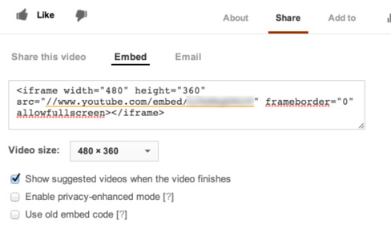

MongKok is a modern onepage resume / personal web template built on Bootstrap 3 with lots of options for customization. The key features of this template include:
The Boostrap 3 CSS stylesheets used in this template are linked directly to CDNs (Content Delivery networks). Before editing the template, please make sure that you are connected to the Internet. Otherwise, the template will not be able to work properly.
Since portfolio items and their details are loaded using AJAX, we recommend editing the MongKok template on a PC or Mac with WAMP or MAMP installed. If you edit this template on a computer without a local web server, you may not be able to load the portfolio section properly until you upload the template to your web server.
To test / use the ajax contact form in this template, you will need to make sure that your web server supports PHP and the PHP mail function.
Once you download the theme package from themeforest.net and unzip it, you will find two folders named Help and HTML. The files you will need to edit and upload to your web server are those within the HTML folder. All the paths in this manual refer to files and folders within the HTML folder unless otherwise specified.
A color scheme in the MongKok template consists of two colors: primary color and secondary color. To change the color scheme, open the LESS file css/index.less and locate the variables @primaryColor and @secondaryColor. After changing their values, save the LESS file and then compile it using WinLess on Windows or Crunch! on Mac to generate a new version of “index.css” so that your changes can take effect.
You can also use a single color instead of dual colors in the color scheme. Simply make the value of the variable @secondaryColor equal to the value of the variable @primaryColor. You will then have a monotone version of the template.
The MongKok template also comes with 5 predefined color schemes. You can choose a scheme you like in css/index.less by commenting out the other 4 schemes.
4 different fonts are used in the body text, the title text, the signatures and the blockquotes of the MongKok template. To change the typeface, open index.html and locate the following lines in the head tag.
<link href='http://fonts.googleapis.com/css?family=PT+Sans:400italic,700italic,400,700' rel='stylesheet' type='text/css'> <link href='http://fonts.googleapis.com/css?family=Roboto+Condensed:400,700' rel='stylesheet' type='text/css'> <link href='http://fonts.googleapis.com/css?family=Satisfy:400' rel='stylesheet' type='text/css'>
Chooose the web fonts you want to use from Google Fonts. Then copy the HTML code of the link tags for your web fonts and replace the original link tags shown above in index.html. Then save your changes.
Next, open css/index.less and locate the following block.
@bodyTextFont: "PT Sans", Sans-Serif; @titleTextFont: "Roboto Condensed", Sans-Serif; @signatureFont: "Satisfy", Sans-Serif; @blockquoteFont: "Georgia", "Times New Roman", Serif;
Specify which font of new web fonts you would like to use in the body text, the title text, the signatures and the blockquotes by updating the font names in the block shown above. Finally, save the file and then compile it using WinLess on Windows or Crunch! on Mac to generate a new version of “index.css” so that your changes can take effect.
There are many variables in css/index.less whose values you can change to customize the MongKok theme. Please use the table below for your reference.
| Property | Functionality | Default Value | Remarks |
|---|---|---|---|
| @bgColor | The background color of this theme | #ffff | |
| @bodyTextColor | The color of body text in this theme | #666 | |
| @bodyTextFontWeight | The font weight of body text in this theme | 400 | |
| @bodyFontSize | The font size of body text in this theme | 14.5px | |
| @bodyLineHeight | The line height of body text in this theme | 22px | |
| @titleTextColor | The color of title text in this theme | #000 | |
| @titleTextFontWeight | The font weight of title text in this theme | 700 | |
| @primaryColor | The primary color of this theme | (The primary color of one of the predefined color schemes) | |
| @darkPrimaryColor | The dark version of the primary color | mix(@primaryColor, black, 50%) | |
| @lightPrimaryColor | The light version of the primary color | mix(@primaryColor, white, 15%) | |
| @secondaryColor | The secondary color of this theme | (The secondary color of one of the predefined color schemes) | |
| @linkColor | The color of links in this theme | @primaryColor | |
| @linkHoverColor | The color of hovered links in this theme | @secondaryColor | |
| @bodyTextFont | The typeface of the body text | "PT Sans", Sans-Serif | |
| @titleTextFont | The typeface of the title text | "Roboto Condensed", Sans-Serif | |
| @signatureFont | The typeface of signatures | "Satisfy", Sans-Serif | |
| @blockquoteFont | The typeface of blockquotes | "Georgia", "Times New Roman", Serif | |
| @transitionDuration | The duration of CSS transitions in this theme | 0.5s | |
| @preloaderBgColor | The background color of preloader | #222 | |
| @preloaderIcon | The URL for the preloader icon | url('../images/preloader.gif') | Format: url('http://example.com/example.gif') |
If you cannot find the details of a variable in the above table, please refer to the contents related to their own sections in this manual.
There are 4 navigation bar positions available in the MongKok template. You can place the navigation bar at the top, bottom, left or right of the browser viewport.
To change the position of the navigation bar, open js/index.js and change the value of the property navPosition in the variable navSettings to top, bottom, left or right according to your preference and then save the changes you have made.
There are 6 off-canvas navigation animations available in the MongKok template. Most of the time, the navigation bar is hidden from the browser viewport, and it will move into the viewport once you click the navigation bar toggle. The 6 animations available are push, reveal, scale up, rotate in, rotate out and rotate & reveal.
To change the navigation animation, open js/index.js and change the value of the property offCanvasAnimation in the variable navSettings to push, reveal, scale-up, rotate-in, rotate-out or rotate-reveal according to your preference and then save the changes you have made.
You can add your name, menu items, social links and other information to the navigation bar. To do so, locate the nav tag in index.html. You can then add your name to the div tag with the class before-menu, and your social links to the div tag with the class after-menu.
If the navigation bar is at the top / bottom of the browser viewport, the contents within the div tags with the class before-menu or after-menu will be hidden. These contents will only be visible when the navigation bar is at the left / right of the browser viewport.
The menu items are defined within the ul tag with the classes menu and nav. Each item is defined in the following format.
<li><a href="#[Section ID]"><i class="fa [FontAwesome icon class]"></i><span>[Section name]</span></a></li>
If you want your menu item to link to an external resource, you can define it like this.
<li><a target="_blank" href="http://www.example.com"><i class="fa [FontAwesome icon class]"></i><span>[Name of the external resource]</span></a></li>
You can set up the navigation bar by adding property-value pairs in the following format to the navSettings variable in js/index.js.
[Property]: [Value],
Below is a list of properties that you can use to customize the navigation bar.
| Property | Functionality | Default Value | Remarks |
|---|---|---|---|
| navPosition | The position of the navigation bar | 'top' | Valid values are 'top', 'bottom', 'left' or 'right'. |
| offCanvasAnimation | The CSS3 animation for off-canvas navigation | 'rotate-reveal' | Valid values are 'push', 'reveal', 'scale-up', 'rotate-in', 'rotate-out' and 'rotate-reveal'. |
| offCanvasAnimationPerspective | The CSS perspective for the animation of off-canvas navigation | '400px' | |
| offCanvasAnimationScaleUpInitScale | The initial scale for the scale up animation for off-canvas navigation | 0.85 | |
| offCanvasAnimationRotateRevealAngle | The rotating angle of the canvas in degree for the rotate & reveal animation of off-canvas navigation | 3 | |
| offCanvasAnimationRotateRevealAngle | The duration of the fallback animation of off-canvas navigation in milliseconds | 500 | When CSS3 transitions are not available, the fallback animation will be used. |
| verticalNavWidth | The width of the navigation bar when it is placed on the left / right of the browser viewport | '220px' | |
| verticalNavShowIcons | Specifies whether to show icons in the menu items of the navigation bar when it is placed on the left / right of the browser viewport | true | Valid values are true / false. |
| navScrollingAnimationDuration | The duration of the scrolling animation after an menu item is clicked in milliseconds | 300 |
There are also a number of variables in css/index.less whose values you can change to modify the appearance of the navigation bar. Please see the table below for your reference.
| Property | Functionality | Default Value | Remarks |
|---|---|---|---|
| @navBgColor | The background color of the navigation bar | #333 | |
| @navTextColor | The text color of the navigation bar | rgba(255,255,255,1) | |
| @navLinkColor | The color of links in the navigation bar | rgba(255,255,255,.2) | |
| @navLinkHoverColor | The color of hovered links in the navigation bar | rgba(255,255,255,1) | |
| @navToggleBgColor | The background color of the toggle of the navigation bar | 3 | |
| @navToggleLinkColor | The color of links in the toggle of the navigation bar | #fff | |
| @navToggleLinkHoverColor | The color of hovered links in the toggle of the navigation bar | #fff | |
| @navToggleBgHoverColor | The background color of the hovered toggle of the navigation bar | @darkPrimaryColor | |
| @navToggleWidth | The width of the toggle of the navigation bar | 40px | |
| @navToggleHeight | The height of the toggle of the navigation bar | 40px | |
| @horizontalNavToggleVerticalOffset | The vertical distance between the toggle and the navigation bar when the navigation bar is placed at the top / bottom of the browser viewport | 50px | |
| @horizontalNavToggleHorizontalOffset | The horizontal distance between the toggle and the left / right border of the browser viewport when the navigation bar is placed at the top / bottom of the browser viewport | 5% | |
| @verticalNavToggleVerticalOffset | The vertical distance between the toggle and the top / bottom border of the browser viewport when the navigation bar is placed at the left / right of the browser viewport | 40px | |
| @verticalNavToggleHorizontalOffset | The horizontal distance between the toggle and the navigation bar when the navigation bar is placed at the left / right of the browser viewport | 5% | |
| @navToggleBorderRadius | The border radius of the toggle of the navigation bar | 0 |
Each section in the MongKok template is defined in the following format.
<section id="[Section ID]"> <div class="container"> <div class="row"> <div class="col-sm-10 col-sm-offset-1"> <h2 class="h2-style">[Section Title]</h2> <div class="row"> [Section Content] </div> </div> </div> </div> </section>
Please follow the above format when creating your own section. Also, a code snippets page is included the theme package to help you create your own contents in a more convenient way. It contains a lot of useful HTML codes.
After creating a new section, please remember to add this section to the menu in the navigation bar. For the format of an menu item, please refer to the section Adding Contents to the Navigation Bar.
To remove an existing section, simply remove its related section tag and the HTML code inside it. After that, please remove its related menu item from the navigation bar.
The welcome section is the first section of this template. This section is designed to display your basic information such as your name and your contact methods in a way that grabs attentions. It is defined in the following format.
<section id="welcome">
<div class="container">
<div class="row">
<div class="col-sm-10 col-sm-offset-1 vertically-centered-container">
<div class="vertically-centered">
<p class="before-name title-font uppercase letter-spacing">[Any text before name]</p>
<h1 class="name"><span class="span-text">[Your name]</span></h1>
<p class="after-name"><span class="span-text title-font">[Any text after name]</span></p>
<div class="row info">
<div class="col-md-4"><p><i class="fa fa-mobile-phone fa-lg"></i>[Telephone]</p></div>
<div class="col-md-4"><p><i class="fa fa-envelope-o"></i><a href="#">[Email]</a></p></div>
<div class="col-md-4"><p><i class="fa fa-laptop"></i><a href="#">[Website]</a></p></div>
</div>
</div>
</div>
</div>
</div>
</section>
There are basically 4 subsections in the welcome section: the before-name subsection, the name subsection, the after-name subsection and the info subsection. Any text that you want to appear before your name can be placed in the before-name subsection. Your name can be placed in the name subsection, and any text that you want to appear after your name, such as your position, can be placed in the after-name subsection. Your contact info, such as your telephone, email and website can be placed in the info subsection.
The class span-text is to make the text span the whole width of its container. The class title-font is to indicate the use of the font for the title text instead of the body text. The other classes used in the code above should be quite self-explanatory. For more about the use of the typography classes, please refer to the code snippets page that comes with the theme package.
In the name subsection, besides using static text as in the example above, you can also use the following code to create a ticker.
<div class="ticker"> <h1 class="name"><span class="span-text">I'm Creative</span></h1> <h1 class="name"><span class="span-text">I'm Talented</span></h1> <h1 class="name"><span class="span-text">I'm John Doe</span></h1> </div>
To change the height of the welcome section, open css/index.less and locate the variable @welcomeSectionHeight. Then change its value to the height you want to use.
The unit of the height value can be px or %. Some typical height values are 100%, 80% and 500px.
You can fix / unfix the welcome section in the MongKok template. If the welcome section is fixed, it will stay at the same position when you scroll the webpage.
Open js/index.js and locate the variable welcomeSettings. Change the value of the property fixFirstSection to true / false to fix / unfix the welcome section.
To show / hide the box shadow at the bottom of the welcome section, open css/index.less and locate the variable boxShadowAfterWelcome. Use any value of the CSS property box-shadow such as 0 0 15px 0 rgba(0,0,0,.5); or none; as the value of the variable. Please refer to this webpage for details of the box-shadow property.
There are a number of variables in css/index.less whose values you can change to modify the appearance of the welcome section. Please see the table below for your reference.
| Property | Functionality | Default Value | Remarks |
|---|---|---|---|
| @welcomeBgColor | The fallback background color of the welcome section | @primaryColor | |
| @welcomeUseBgImg | Specifies whether to use background image in the welcome section | false | |
| @welcomeBgImg | Specifies the URL of the background image in the welcome section | url('http://placehold.it/1200x800') | Effective only when @welcomeUseBgImg is true. Format: url('http://www.example.com/example.jpg') |
| @welcomeSectionHeight | The height of the welcome section | 80% | |
| @welcomeContentMaxWidth | The maximum width of the content of the welcome section | none | This variable is used to impose a maximum width to the content of the welcome section so that text with the class span-text will not appear too large. Recommended values are 750px or none. |
| @welcomePaddingTop | The top padding of the welcome section | 0 | You can use this variable to fine-tune the vertical location the content of the welcome section. |
| @welcomeBeforeNameColor | The color of the text in the before-name subsection of the welcome section | #fff | |
| @welcomeNameColor | The color of the text in the name subsection of the welcome section | #fff | |
| @welcomeAfterNameColor | The color of the text in the after-name subsection of the welcome section | mix(@welcomeBgColor, black, 55%) | |
| @welcomeLinkColor | The color of links in the welcome section | mix(@welcomeBgColor, black, 55%) | |
| @welcomeLinkHoverColor | The color of hovered links in the welcome section | darken(@welcomeLinkColor, 15%) | |
| @boxShadowAfterWelcome | The box shadow at the bottom of the welcome section | 0 0 15px 0 rgba(0,0,0,.5) | Please refer to Showing / Hiding Box Shadow for details |
The about section lets you add your profile picture and some descriptions about yourself.
For the profile picture, you can use the class img-rounded, img-circle, img-thumbnail to give it rounded corners, a circular shape or the bootstrap thumbnail style.
In css/index.less, you will also be able to find a variable @profilePicMaxWidth. This variable is to impose the maximum width for the profile picture, so that it will not appear too large on mobile devices. The default value of @profilePicMaxWidth is 300px.
For the descriptions, you can use drop caps, bold text, links and other typographic styles. The HTML code snippets for these styles can be found in the code snippets page included in the theme package.
Education and experience in the resume section are actually two item lists, and they are defined in the following format.
<h3 class="h3-style">Education</h3>
<ul class="item-list">
<li>
<div class="row">
<div class="col-sm-4">
<p class="title-style sm-text-center">[University name]</p>
<p class="tag sm-text-center">[Period]</p>
</div>
<div class="col-sm-8">
<p class="title-style">[Degree earned]</p>
<p>[Additional info]</p>
</div>
</div>
</li>
</ul>
<h3 class="h3-style">Experience</h3>
<ul class="item-list">
<li>
<div class="row">
<div class="col-sm-4">
<p class="title-style sm-text-center">[Company name]</p>
<p class="tag sm-text-center">[Period]</p>
</div>
<div class="col-sm-8">
<p class="title-style">[Position]</p>
<p>[Job description]</p>
</div>
</div>
</li>
</ul>
Please follow the above format to add your education and experience.
Honors and rewards in the resume section is acutally an item lists, and it is defined in the following format.
<h3 class="h3-style">Honors and Awards</h3>
<ul class="item-list list-half-margin-bottom">
<li>
<p><span class="title-style">[Honor / Award name]</span>
<br>[Additional info]</p>
</li>
</ul>
Please follow the above format to add your honors and rewards.
There are 4 types of charts available in the MongKok template: bar charts, donut charts, pie charts (a special case of donut charts), and the progress charts.
Bar charts are defined in the following format.
<dl id="[Chart ID]" class="chart bar-chart" data-label-font-color="[Chart label color]"> <dt data-color="[Background color of bar for this item]">[Label of this item]</dt> <dd>[Value between 0 and 100]</dd> ... </dl>
Donut charts are defined in the following format.
<dl id="[Chart ID]" class="chart donut-chart" data-arc-inner-radius-percent="[Inner radius in percentage]" data-arc-outer-radius-percent="[Outer radius in percentage]" data-show-percentage="[true / false]"> <dt data-color="[Color of fill for this item]">[Label of this item]</dt> <dd>[Value between 0 and 100]</dd> ... </dl>
Pie charts are defined in the following format. Note that pie charts are a special case of donut charts.
<dl id="[Chart ID]" class="chart donut-chart" data-show-percentage="[true / false]"> <dt data-color="[Color of fill for this item]">[Label of this item]</dt> <dd>[Value between 0 and 100]</dd> ... </dl>
Progress charts are defined in the following format.
<dl id="[Chart ID]" class="chart progress-chart" data-symbol-font-awesome-class="[FontAwesome icon class for progress symbol]"> <dt data-color="[Color of fill for this item]">[Label of this item]</dt> <dd>[Value between 0 and 100]</dd> ... </dl>
Note that Chart ID is required for every chart in the MongKok template. If a chart does not have an ID, it will not work properly.
Examples of charts are also available in the code snippets page that comes with the theme package.
You can set up charts by adding property-value pairs in the following format to the barChartSettings variable, the donutChartSettings variable and the progressChartSettings variable in js/index.js.
[Property]: [Value],
Below is a list of properties that you can add to the barChartSettings variable to customize bar charts.
| Property | Functionality | Default Value | Remarks |
|---|---|---|---|
| paddingLeft | The left padding of bar charts | 0 | Unit: pixels |
| paddingRight | The right padding of bar charts | 0 | Unit: pixels |
| barHeight | The height of bars in bar charts | 26 | Unit: pixels |
| labelFontSize | The font size of labels in bar charts | 12 | Unit: pixels |
| labelFontWeight | The font weight of labels in bar charts | 400 | |
| labelFontColor | The font color of labels in bar charts | '#666666' | The value of this property can be overridden by the data-label-font-color attribute specified in the definition of a bar chart. |
| labelHeight | The height of labels in bar charts | 12 | Unit: pixels |
| labelPaddingLeft | The left padding of labels in bar charts | 10 | Unit: pixels |
| labelPaddingRight | The right padding of labels in bar charts | 10 | Unit: pixels |
| barVerticalSpacing | The vertical spacing between bars | 3 | Unit: pixels |
| barStrokeWidth | The stroke width of bars in bar charts | 0 | Unit: pixels |
| barStrokeColor | The stroke color of bars in bar charts | '#ffffff' | |
| defaultBarFillColor | The default fill of bars in bar charts | '#ffe0ba' | The value of this property can be overridden by the data-color attribute specified in the definition of each item of a bar chart. |
| initialPercent | The initial percentage of a bar when the bar charts animation begins | 0 | |
| animationDuration | The duration of the bar charts animation in milliseconds | 1200 | |
| onScrollAnimation | Specifies whether or not to enable on-scroll animations for bar charts | true |
Below is a list of properties that you can add to the donutChartSettings variable to customize donut / pie charts.
| Property | Functionality | Default Value | Remarks |
|---|---|---|---|
| paddingLeft | The left padding of donut / pie charts (ignoring labels) | 150 | Unit: pixels |
| paddingRight | The right padding of donut / pie charts (ignoring labels) | 0 | Unit: pixels |
| paddingTop | The top padding of donut / pie charts (ignoring labels) | 0 | Unit: pixels |
| paddingBottom | The bottom padding of donut / pie charts (ignoring labels) | 0 | Unit: pixels |
| labelFontSize | The font size of labels in donut / pie charts | 12 | Unit: pixels |
| labelFontWeight | The font weight of labels in donut / pie charts | 700 | |
| labelFontColor | The font color of labels in donut / pie charts | '#666666' | The value of this property can be overridden by the data-label-font-color attribute specified in the definition of a donut / pie chart. |
| labelHeight | The height of labels in donut / pie charts | 12 | Unit: pixels |
| showLabel | Specifies whether or not to show labels in donut / pie charts | true | The value of this property can be overridden by the data-show-labels attribute specified in the definition of a donut / pie chart. |
| showPercentage | Specifies whether or not to show percentages in labels in donut / pie charts | false | The value of this property can be overridden by the data-show-percentage attribute specified in the definition of a donut / pie chart. |
| heightToWidthRatio | The height-to-width ratio of donut / pie charts | 1/2 | Value must be a number. |
| maxHeight | The maximum height of donut / pie charts | 200 | Unit: pixels |
| arcInnerRadiusPercent | The inner radius in percentage of donut / pie charts | 50 | The value of this property can be overridden by the data-arc-inner-radius-percent attribute specified in the definition of a donut / pie chart. |
| arcOuterRadiusPercent | The outer radius in percentage of donut / pie charts | 100 | The value of this property can be overridden by the data-arc-outer-radius-percent attribute specified in the definition of a donut / pie chart. |
| arcStrokeWidth | The stroke width of donut / pie charts | 3 | |
| arcStrokeColor | The stroke color of donut / pie charts | '#ffffff' | |
| defaultArcFillColor | The default fill of arcs in donut / pie charts | '#ffe0ba' | The value of this property can be overridden by the data-color attribute specified in the definition of each item of a donut / pie chart. |
| animationDuration | The duration of the animation for showing each item in the donut / pie charts in milliseconds | 200 | |
| onScrollAnimation | Specifies whether or not to enable on-scroll animations for donut / pie charts | true |
Below is a list of properties that you can add to the progressChartSettings variable to customize progress charts.
| Property | Functionality | Default Value | Remarks |
|---|---|---|---|
| labelFontSize | The font size of labels in progress charts | 12 | Unit: pixels |
| labelFontWeight | The font weight of labels in progress charts | 700 | |
| labelFontColor | The font color of labels in progress charts | '#666666' | |
| labelPaddingLeft | The left padding of labels in progress charts | 0 | Unit: pixels |
| labelPaddingRight | The right padding of labels in progress charts | 10 | Unit: pixels |
| labelWidth | The width of labels in progress charts | 60 | Unit: pixels |
| symbolFontAwesomeClass | The FontAwesome icon class for symbols of progress charts | 'fa-stop' | The value of this property can be overridden by the data-symbol-font-awesome-class attribute specified in the definition of a progress chart. |
| symbolFontSize | The font size of symbols of progress charts | 14 | Unit: pixels |
| symbolPaddingLeft | The left padding of each symbol in progress charts | 2 | Unit: pixels |
| symbolPaddingRight | The left padding of each symbol in progress charts | 2 | Unit: pixels |
| itemHeight | The height of each item in progress charts | 20 | Unit: pixels |
| defaultColor | The default color of symbols in progress charts | "#000000" | |
| animationDuration | The duration of the animation for progress charts in milliseconds | 1200 | |
| onScrollAnimation | Specifies whether or not to enable on-scroll animations for progress charts | true |
Since portfolio items and their details are loaded using AJAX, we recommend editing the MongKok template on a PC or Mac with WAMP or MAMP installed. If you edit this template on a computer without a local web server, you may not be able to load the portfolio section properly until you upload the template to your web server.
Information about portfolio items and their details is saved inside the folder portfolio. This folder is organized as follows.
Portfolio
[Folder of portfolio category]
list.html
details-1.html
details-2.html
...
[Folder of portfolio category]
list.html
details-1.html
details-2.html
...
[Folder of portfolio category]
list.html
details-1.html
details-2.html
...
Each portfolio category will have its own folder inside the folder portfolio. Inside the folder of each category, there should be a file named list.html, which lists all the portfolio items of this category. Note that this file should always be named list.html.
Besides list.html, portfolio details are saved in their own HTML files. Unlike list.html, file names of portfolio details are flexible.
To add a portfolio category, open index.html and locate the ul tag with the class categories in the portfolio section. Each category is defined in the following format inside this ul tag.
<li><a href="#" data-cat="[Folder name of this category]">[Category name]</a></li>
Please note that the value of the data-cat attribute should be the same as the name of the folder of this category.
Next, open the folder portfolio and create a folder for this category using the same name specified in the data-cat attribute.
After creating the folder for a new portfolio category, inside that folder, create an HTML file named list.html. This file will list all the portfolio items belonging to this category. Below is the format of this file.
<html>
<head>
<title></title>
</head>
<body>
<ul class="ajax-portfolio-item-list">
<li>
<a data-href="[Relative / Absolute path to details of this portfolio item]">
<img data-src="[Relative / Absolute path to thumbnail of this portfolio item]" alt="...">
<div class="caption vertically-centered-container">
<div class="vertically-centered">
<h3>[Title of this portfolio item]</h3>
<div class="view-btn">View</div>
</div>
</div>
</a>
</li>
...
</ul>
</body>
</html>
Each portfolio item is defined inside an li tag, which is inside the ul tag with the class ajax-portfolio-item-list. For each item, you should specify the relative / absolute path to the details page of this portfolio item through the data-href attribute of the a tag, the relative / absolute path to the thumbnail of this portfolio item through the data-src attribute of the img tag. Title of the portfolio item should be placed inside the h3 tag.
Since portfolio details are loaded using AJAX, if you would like to use relative paths in links, images and iframes, please use the attributes data-href and data-src instead of href and src.
Please also see the list.html in the sample data to help you add your own portfolio items.
The MongKok template comes with 3 types of predefined layouts for portfolio details. The 3 types feature an image slider, an embedded YouTube video, and an embedded Vimeo video respectively. You can find these layouts in the sample data. You can also use your own layouts.
To keep the portfolio folder organized, it is recommended to create the details page of a portfolio item inside its own category folder. However, it is not mandatory to do so. Since a portfolio item can belong to more than one categories at the same time. In that case, the details page can be saved inside the folder of only one category, and the list.html of other categories can refer to that details page.
A minimal details page of a portfolio item should be defined in the following format.
<html> <head> <title></title> </head> <body> <h3>[Title of this portfolio item]</h3> <div class="row desc"> [Detailed descriptions of this portfolio item] </div> </body> </html>
Title of this portfolio item should be placed inside the h3 tag, and you are free to add your own content inside the div tag with the classes row and desc.
The 3 types of predefined layouts are based on the minimal format above. Each of the 3 types has 3 variants: no sidebar, sidebar on the left and sidebar on the right.
The predefined layout featuring an image slider with sidebar on the left is defined in the following format.
<html> <head> <title>Details of Portfolio Item</title> </head> <body> <h3>[Title of this portfolio item]</h3> <ul class="images-for-slider"> <li> <img data-src="[Relative / Absolute path to a slider image]" alt="..."> <div class="carousel-caption"> <p>[Caption of this slider image]</p> </div> </li> <li> <img data-src="[Relative / Absolute path to a slider image]" alt="..."> <div class="carousel-caption"> <p>[Caption of this slider image]</p> </div> </li> ... </ul> <div class="row desc"> <div class="col-sm-4 left-info-col"> <dl> <dt>[Label of sidebar info]</dt> <dd>[Value of sidebar info]</dd> <dt>[Label of sidebar info]</dt> <dd>[Value of sidebar info]</dd> ... </dl> </div> <div class="col-sm-8 content-col"> [Detailed descriptions of this portfolio item] </div> </div> </body> </html>
The predefined layout featuring an embedded YouTube / Vimeo video with sidebar on the left is defined in the following format.
<html> <head> <title>Details of Portfolio Item</title> </head> <body> <h3>[Title of this portfolio item]</h3> <iframe class="video-iframe" data-src="[YouTube / Vimeo URL for embedding]" frameborder="0"></iframe> <div class="row desc"> <div class="col-sm-4 left-info-col"> <dl> <dt>[Label of sidebar info]</dt> <dd>[Value of sidebar info]</dd> <dt>[Label of sidebar info]</dt> <dd>[Value of sidebar info]</dd> ... </dl> </div> <div class="col-sm-8 content-col"> [Detailed descriptions of this portfolio item] </div> </div> </body> </html>The following two screenshots illustrate where to find the URL for embedding in a YouTube / Vimeo video.

Since portfolio details are loaded using AJAX, if you would like to use relative paths in links, images and iframes, please use the attributes data-href and data-src instead of href and src.
Please refer to the sample data for the formats of other variants of the 3 types of layouts.
You can set up the portfolio section by adding property-value pairs in the following format to the portfolioSettings variable in js/index.js.
[Property]: [Value],
Below is a list of properties that you can use to customize the portfolio section.
| Property | Functionality | Default Value | Remarks |
|---|---|---|---|
| heightToWidthRatio | The height to width ratio of portfolio thumbnails | 3/4 | Value must be a number. |
| minThumbnailWidth | The minimum width of portfolio thumbnails | 220 | Unit: pixels |
| itemDetailsDropCap | Specifies whether or not to automatically add the drop-cap class to the first paragraph of portfolio details | true | |
| animationDuration | The duration of animations in the portfolio section in milliseconds | 300 | |
| autoScroll | Specifies whether or not to automatically scroll to the top of portfolio details when a portfolio item is selected. | true |
There are a few variables in css/index.less whose values you can change to modify the appearance of the portfolio section. Please see the table below for your reference.
| Property | Functionality | Default Value | Remarks |
|---|---|---|---|
| @portfolioItemListCaptionPanelBgColor | The background color of the caption overlay in the portfolio section | fadeout(black, 30%) | |
| @portfolioItemListTitleTextColor | The color of title text in the caption overlay in the portfolio section | #fff | |
| @portfolioItemListViewButtonBgColor | The background color of the view button in the caption overlay in the portfolio section | darken(@primaryColor, 10%) | |
| @portfolioItemListViewButtonTextColor | The color of text of the view button in the caption overlay in the portfolio section | #fff |
The Mongkok template features an event section which allows you to display the events you will be attending.
Modifying the event section is straightforward. If you would like to add / remove a row / column, simply follow the HTML table format at this webpage or refer to the code snippets page for more examples of HTML tables.
If you are an author, then it is likely that the book section will be useful to you. It generates 3D CSS3 animated books from book cover images with 2D fallback.
A CSS3 animated book in the MongKok template is defined in the following format.
<figure class="css-book" data-back-face-bg-color="[Background color of the back face]" data-left-face-bg-color="[Background color of the left face]" data-front-face-bg-color="[Background color of the front face]"> <img src="[Path to book cover image]" alt=""> <figcaption class="vertically-centered-container"> <div class="vertically-centered"> <h4>[Book title]</h4> <p><a href="[Link to book preview]"><i class="fa fa-search fa-lg"></i> Preview</a></p> <p><a href="[Link to book purchasing webpage]"><i class="fa fa-shopping-cart fa-lg"></i> Buy from Amazon.com</a></p> </div> </figcaption> </figure>
The HTML code above is self-explanatory. Depending on the book cover image, you may want to use different background colors for the front / left / back face for different books.
Please refer to the animated books in the sample data and the code snippets page for the HTML code format.
There are 2 predefined 3D transitions for animated books. To change the transition, open js/index.js and locate the property bookTransformPreset within the variable cssBookSettings. Then set its value to 1 or 2. If you cannot find this property, add this property to cssBookSettings using the following format.
bookTransformPreset: [Value of this property],
If you are familar with CSS3 transform, you can even try creating your own book transitions. Simply set the value of the bookTransformPreset property to 0 and then add the following properties to the cssBookSettings object.
bookInitialTransform: '[Value of CSS3 transform]', bookHoverTransform: '[Value of CSS3 transform]', frontFaceInitialTransform: '[Value of CSS3 transform]', frontFaceHoverTransform: '[Value of CSS3 transform]',
You may want to refer to Setting Up Animated Books through index.js for more detailed explanations of these 4 properties.
If you are not familiar with CSS3 transform, it is highly recommended that you use one of the predefined book transitions. Since the stability of new book transitions is not guaranteed.
You can set up animated books by adding property-value pairs in the following format to the cssBookSettings variable in js/index.js.
[Property]: [Value],
Below is a list of properties that you can use to customize animated books.
| Property | Functionality | Default Value | Remarks |
|---|---|---|---|
| disable3dStyle | Disable 3D animated books and use the 2D fallback | false | |
| bookTransformPreset | Specifies which predefined book transition to use | 1 | Valid values are 0, 1, 2. 1 and 2 refer to the two predefined transitions respectively, while 0 indicates not to use the two predefined transitions. |
| pageOffset | The distance between the borders of the inner page and the cover in 3D animated books. | 6 | Unit: pixels |
| thickness | The thickness of 3D animated books | 30 | Unit: pixels |
| bookInitialTransform | The initial CSS transform for animated books | 'translateZ(-100px) rotateY(-30deg)' | This property is only effective when bookTransformPreset is not 1 or 2. |
| bookHoverTransform | The CSS transform when hovering animated books | 'translateZ(0) rotateY(0deg) rotateX(0deg)' | This property is only effective when bookTransformPreset is not 1 or 2. |
| frontFaceInitialTransform | The initial CSS transform for the book cover (front face) | 'rotateY(0deg)' | This property is only effective when bookTransformPreset is not 1 or 2. |
| frontFaceHoverTransform | The CSS transform for the book cover (front face) when hovering animated books | 'rotateY(-180deg)' | This property is only effective when bookTransformPreset is not 1 or 2. |
There are also a number of variables in css/index.less whose values you can change to modify the appearance of animated books. Please see the table below for your reference.
| Property | Functionality | Default Value | Remarks |
|---|---|---|---|
| @cssBookFlatCaptionBgColor | The background color of caption overlay in the 2D fallback of animated books | fadeout(black, 30%) | |
| @cssBookFlatCaptionTitleColor | The color of titles in caption overlay in the 2D fallback of animated books | #fff | |
| @cssBookFlatCaptionHoverPadding | The padding of caption overlay in the 2D fallback of animated books | 10px |
The gallery section allows you to show your images, YouTube / Vimeo videos and webpages in a lightbox. The lightbox feature is provided by the Colorbox plug-in.
Gallery items are defined in the ul tag with the gallery class.
An image lightbox is defined in the follow format in the gallery section.
<li> <a href="[Path to large image]" class="lightbox lightbox-image" title="[Caption shown in lightbox]"> <img src="[Path to image thumbnail]" alt="[alternate text for image thumbnail]"> </a> </li>
A video lightbox is defined in the follow format in the gallery section.
<li> <a href="[YouTube / Vimeo URL for embedding]" class="lightbox lightbox-video" title="[Caption shown in lightbox]"> <img src="[Path to video thumbnail]" alt="[alternate text for video thumbnail]"> </a> </li>
A webpage lightbox is defined in the follow format in the gallery section.
<li> <a href="[URL of webpage]" class="lightbox lightbox-webpage" title="[Caption shown in lightbox]"> <img src="[Path to webpage thumbnail]" alt="[alternate text for webpage thumbnail]"> </a> </li>
You may also use the lightbox feature outside the gallery section. Please refer to the code snippets page for the HTML code format.
There are a few variables in css/index.less whose values you can change to modify the appearance of the gallery section. Please see the table below for your reference.
| Property | Functionality | Default Value | Remarks |
|---|---|---|---|
| @galleryLightBoxHoverPanelBgColor | The background color of the hover overlay in the gallery section | @primaryColor | |
| @galleryLightBoxHoverIconColor | The color of icon in the hover overlay in the gallery section | @bgColor | |
| @galleryItemsPerRow | The number of gallery items per row | 4 | The value here may not be effective when the theme is viewed on mobile devices due the width of the display. |
| @galleryItemPadding | The padding of gallery items | 10px | |
| @galleryDisplayOverlay | Specifies whether or not to show the hover overlay | block | Use block or none as value. |
You can set up lightboxes by adding property-value pairs in the following format to the lightboxImageSettings variable, the lightboxVideoSettings variable and the lightboxWebpageSettings variable in js/index.js.
[Property]: [Value],
For a list of properties that you can use to customize lightboxes, please visit the settings section of the Colorbox website.
To set up Google Maps, locate the variable googleMapsSettings in js/index.js.
Change the values of latitude and longitude to the latitude and longitude of your location. Change the value of zoom to control the zoom level of the map.You can further set up Google Maps by adding property-value pairs in the following format to googleMapsSettings.
[Property]: [Value],
All the properties available for customizing Google Maps in this template are listed in the following table.
| Property | Functionality | Default Value | Remarks |
|---|---|---|---|
| styled | Specifies whether to use the styled Google Maps or the original version | true | |
| latitude | Specifies the latitude of the location | 22.282068 | |
| longitude | Specifies the longitude of the location | 114.158893 | |
| zoom | Specifies the zoom level of the map | 15 | |
| hue | Specifies the hue for styling the map (Value should be in RGB format) | primaryColor.toRgbaString() | |
| gamma | Specifies the gamma value for styling the map | 1.75 | |
| saturation | Specifies the saturation value for styling the map | 80 | |
| lightness | Specifies the lightness for styling the map | -10 | |
| invertLightness | Specifies whether to render a light version or a dark version of the map | false | |
| infoWindowContentString | Specifies the content string of the info window when the map marker is clicked | '<h4>Info Window</h4>' + '<p>You can add content here</p>' |
The contact form is powered by the ajax contact form written by jigowatt. The related PHP file is php/contact.php and the related JavaScript file is js/contact.js.
Before you can properly receive messages, open php/contact.php and locate the following line.
$address = "example@example.com";
Replace the email address example@example.com with your own email address.
To add / remove a field, please visit http://jigowatt.co.uk/blog/add-custom-fields-to-the-ajax-contact-form/.
To edit the footer, locate the footer tag in index.html.
You can link to your PDF resume through the Download Resume button, add your own signature and modify the copyright information in the footer section.
There are two variables in css/index.less whose values you can change to modify the appearance of the footer. Please see the table below for your reference.
| Property | Functionality | Default Value | Remarks |
|---|---|---|---|
| @footerBgColor | The background color of the footer | @bgColor | |
| @footerTextColor | The color of body text in the footer | @bodyTextColor |
To set up Google Analytics, scroll to the bottom of index.html. You will then find a script tag that allows you to paste the Google Analytics code.
Due to the off-canvas navigation design of the MongKok template, the welcome section cannot be fixed on iOS if momentum scrolling is activated.
If you would like to disable momentum scrolling on iOS, open js/index.js and locate the variable scrollingSettings. Then Change the value of the property momentumScrolling to false.
To define keywords for search engines, open index.html and locate the following line.
<meta name="keywords" content="Keyword1, Keyword2, Keyword3">
Then add your keywords to the content attribute.
Similarly, to define a description, open index.html and locate the following line.
<meta name="description" content="A modern onepage resume / personal template">
Then add your descriptions of this webpage to the content attribute.
This template supports Chrome, Firefox, Safari and IE9+.
Note that some features of this template may be disabled on certain devices.
If you have any question or problem when setting up or using the theme, or if you have found any bug of the theme, you are welcome to leave a message at www.simon-li.com or send an email to info@simon-li.com on weekdays (GMT+8). I will get back to you as soon as possible. Thank you for your support and understanding.